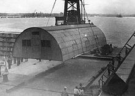

via wikipedia:
A Quonset hut is a lightweight prefabricated structure of corrugated galvanized steel having a semicircular cross-section. The design was developed in the United States, based on the Nissen hut introduced by the British during World War I. Hundreds of thousands were produced during World War II and military surplus was sold to the public. The name comes from the site of their first manufacture at Quonset Point at the Davisville Naval Construction Battalion Center in Davisville, Rhode Island.